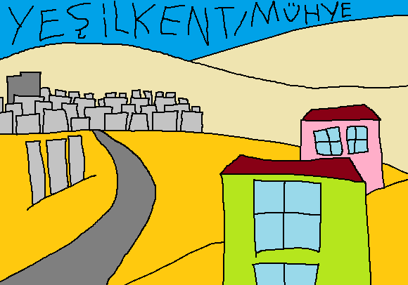

Yeşilkent veya Mühye, iki isme sahip bir köy veya yan yana iki farklı köydür. İt barınağı ve köyün su ihtiyacını karşılayan İmrahor Deresi ile bilinir. Herhalde köyün muhtarı Züğürt Ağa olacak ki bütün tarlalarda "satılık" yazar ve halk çok yakın olan şehir merkezine göç eder. İmrahor Vadisi Millet Bahçesi, Doğukent Caddesi, Eymir Gölü ve sayısız atraksiyonun yakınında olduğu için tek tük gökdelen vardı ama artık ilgi -şimdilik- bittiği için köy eskisi gibi sıradan. Oradan geçerken ortama uymasa da "Rage Against the Machine" ve "New Model Army" gibi müzik gruplarını dinlemek sarıyor.